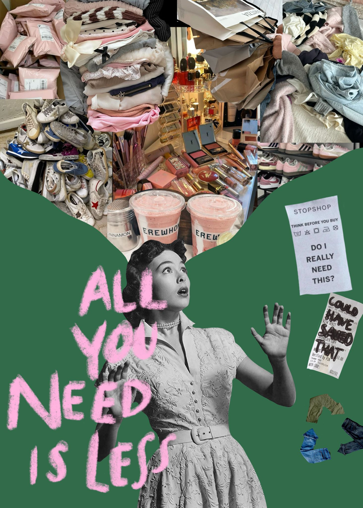

The concept of my photomontage explores overconsumption and consumer culture, especially in fashion and beauty. In modern society people are constantly encouraged to buy more products through advertisements, trends, and social media. Many of these purchases are unnecessary but they are marketed as things that will make people happier or more successful. In my composition I wanted to show how consumerism can become overwhelming. The person in the image looks shocked and surrounded by piles of clothing, shoes, makeup, and shopping bags that appear above her. These objects symbolize the pressure to constantly buy new things. The phrase “All you need is less” contrasts with the excess of products and suggests that reducing consumption may be better for both individuals and the environment. To create this photomontage I used several Photoshop techniques such as layer masking, image isolation, and blending different elements together. I used layer masks to remove the backgrounds of the images and combine them into one composition without destroying the original images. I also experimented with scale and repetition by stacking and grouping many fashion and beauty products to emphasize excess and visual clutter. The contrast between the black and white figure and the colorful product images helps direct attention to the main subject. I also included graphic elements such as a receipt and a message asking “Do I really need this?” to reinforce the idea of questioning consumer habits. The images used in this project were collected from online free-use image sources and combined to create a visual commentary on overconsumption.
Back to Home Page